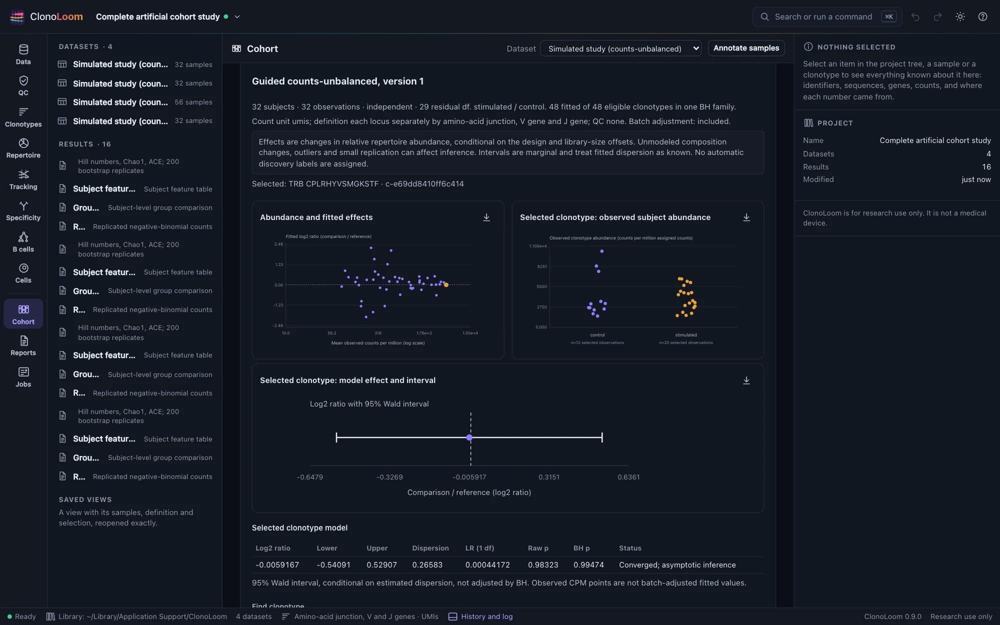
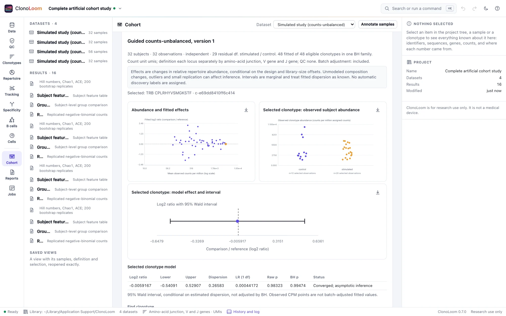
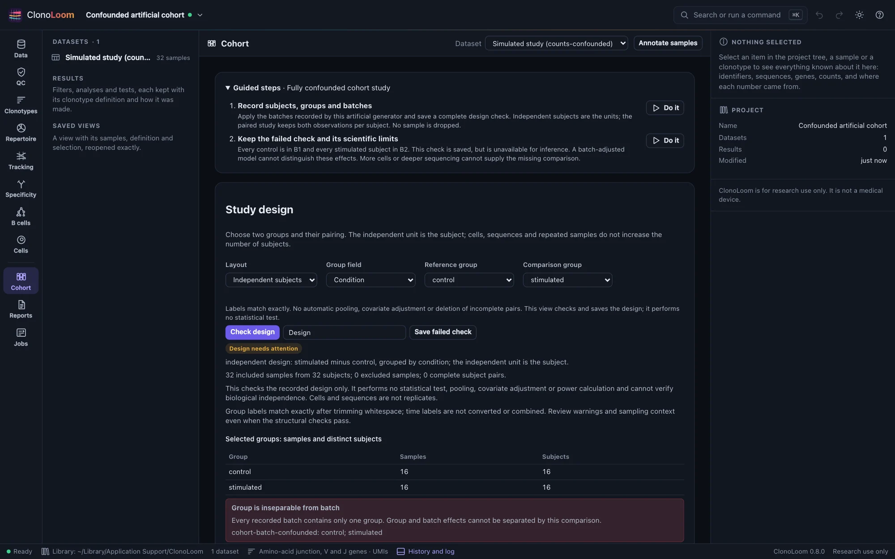
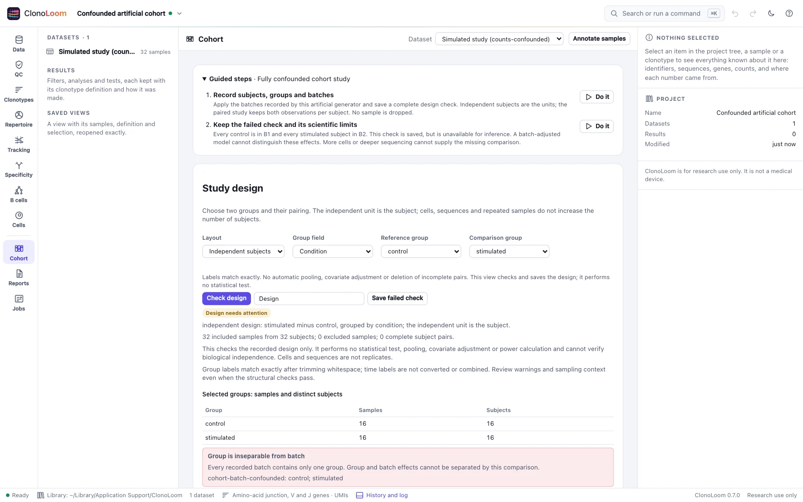

Complete cohort studies
Start with the subjects and sampling design. Follow the same visible steps for usable studies, and retain the failed check when the design cannot identify the comparison.
Choose an artificial study
Generate one of these examples locally, open its files, and choose Cohort → Guided steps (also available in Tracking). These are controlled software demonstrations with fictional receptors and complete generating truth. They are not fitted human populations or antigen-specificity models.
| Example | Subjects and observations | Purpose |
|---|---|---|
| Replicated independent clonotype counts | 16 control + 16 stimulated; 32 samples | Positive effects with heterogeneous gamma-Poisson counts and uneven sampling depths. |
| Replicated counts with no group effect | 16 + 16; 32 samples | All generating group effects are zero; subject, batch and sampling variation remain. |
| Unbalanced cohort study | 12 control + 20 stimulated; 32 samples | Both batches occur in each group. Unequal group sizes do not by themselves make a contrast unidentifiable. |
| Replicated paired clonotype counts | 28 subjects, day 0 and day 14; 56 samples | Repeated samples are paired within subjects, with a subject-blocked count model. |
| Fully confounded cohort study | 16 controls in B1 + 16 stimulated in B2 | Batch and group effects cannot be separated. Keep the failed check; run no group inference. |
Follow the saved analysis chain
- Record subjects, groups and batches. This teaching step applies the generator's documented annotations and saves a named design check. Every sample stays in the report. In real studies, supply the actual design rather than borrowing these assignments.
- Save observed-depth subject features. Measure diversity, then bind the exact diversity result to the saved design version. Each subject/group observation retains its own sample's values, units, missingness, definition and QC. Richness remains dependent on observed sampling depth.
- Compare three declared subject features. The guide selects richness, Shannon entropy and Hill diversity q=1, with 95% marginal intervals, 9,999 requested randomizations and seed 20261025. Both mean and rank tests enter the declared BH family. These feature tests do not adjust for batch; read the sampling/design limits.
- Fit counts with an explicit batch term. Use raw clonotype UMI counts, total-count offsets, minimum count 10 in at least 12 observations, 95% conditional intervals and an estimable batch term. The paired study also includes subject blocks. Inspect filtered/failed fits and the full multiplicity family. These are unmoderated NB2 fits, not full edgeR or DESeq2.
- Keep methods and references. Each result is saved automatically with exact parents and parameters. Export complete tables and source notices from its view. Reopen the saved results without refitting. Repeating the design step creates a new version; rebuild its feature table before continuing.


Keep an unidentifiable design visible
The fully confounded example has a 1.2-fold generating B2 effect as well as planted group effects. No within-batch group comparison exists. The guide saves its failed check, including the complete batch membership, and stops. More cells, deeper sequencing or adding a batch term cannot restore the missing comparison. The saved check is marked FAILED CHECK, cannot be selected as a feature design, and appears in cited Methods. It is an inspection record, not a fitted result.


Interpret the evidence
Count effects are changes in relative repertoire abundance conditional on library offsets and the fitted design. They need not equal the generator's absolute count effects. The abundance/effect panel has a logarithmic horizontal abundance scale and a linear log2-effect axis centered on zero. Subject observations use a zero-based linear CPM scale; paired links join the same subject. Raw CPM points are not batch-adjusted fitted values. Wald intervals treat the fitted dispersion as known and are marginal, not BH-adjusted simultaneous intervals.
Uneven counts, a private long tail and subject variation make these examples useful for exercising research workflows; their particular sample sizes and filters are software policies, not power recommendations. One null study does not establish calibration or guarantee zero small p-values. The independent scientific suite separately checks numerical reference values, null panels and positive controls. A structural pass does not establish randomization, independence, absence of hidden confounding or a causal effect.
Compatibility and scientific basis
The 0.7.0 compatibility project retains all five studies, five design checks and sixteen analysis artifacts. Validation reopens the sources and recomputes each saved diversity, feature, comparison and count result byte for byte. Complete source and truth hashes are checked, and older release projects remain part of the same regression suite.
The subject-unit distinction follows Lazic (2010). Count modeling and exact adaptations are documented with sources in Replicated counts; group estimands and multiplicity in Group comparisons. See simulation rules and research notes. No new inferential method is introduced by these guides.